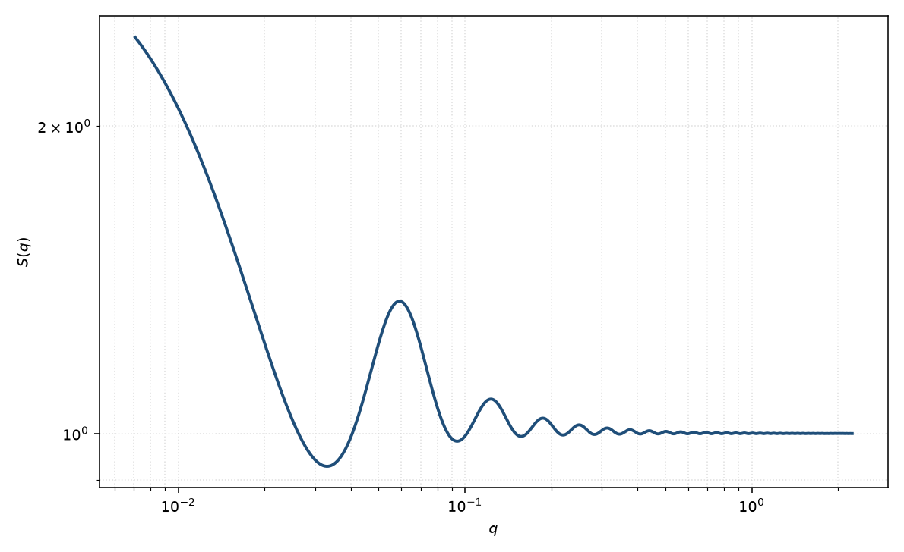

黏性硬球结构因子
sticky hard sphere
适用场景
硬核之外还有极短程吸引（表面黏性、耗尽、疏水接触）时，用 Baxter 黏性硬球 $S(q)$。典型对象：弱絮凝胶体、黏性蛋白质溶液、以及低 $q$ 明显抬升但相关峰仍像硬球的体系。
阱宽可与直径相比时用方阱。长程静电用 Hayter 或双 Yukawa。$\tau$ 很大（弱黏）时退回普通硬球。
物理图像
Baxter 取方阱深度 $\to\infty$、宽度 $\to 0$ 的极限，使二阶维里系数保持有限，得到黏性参数 $\tau$（越小越黏）。PY 闭包对该势仍有解析解：接触处的 $g(\sigma^+)$ 含一个由立方方程决定的 $\lambda(\eta,\tau)$。
$S(0)$ 随黏性增大而升高（压缩率变大，趋近相分离）。第一峰位置仍大致由硬核直径决定。$\tau$ 过小会进入两相区，解析 $S(q)$ 失去物理意义。
示意图

核心公式
Baxter 黏性参数 $\tau$ 由方阱深度 $\varepsilon>0$、宽度 $\Delta$ 的黏性极限定义（$\Delta\to 0$，$\varepsilon\to\infty$，二阶维里系数有限）
$$\frac{1}{12\tau}\approx\lim\frac{\Delta}{\sigma}\,\mathrm{e}^{\varepsilon/kT} \qquad\text{或等价地}\qquad 12\tau\approx\lim\frac{\sigma}{\Delta}\,\mathrm{e}^{-\varepsilon/kT}.$$$\lambda$ 取物理小根，使接触值有限。结构因子仍写成
$$S(q)=\bigl[1-n\hat{c}(q;\eta,\lambda)\bigr]^{-1},$$其中 $\hat{c}$ 在硬球 PY 多项式上增加与 $\lambda$ 成正比的接触项。$\tau\to\infty$ 时 $\lambda\to 0$，回到 Percus–Yevick 硬球。
参数表
| 参数 | 符号 | 含义 | 单位 | 典型范围 |
|---|---|---|---|---|
| 硬球半径 | $R$ | 硬核半径，$\sigma=2R$ | Å | 与 $P(q)$ 半径可比 |
| 体积分数 | $\eta$ | 硬球体积分数 | 无量纲 | $0.02$–$0.3$ |
| 黏性参数 | $\tau$ | Baxter 黏性；越小越吸引 | 无量纲 | 通常 $\tau\gtrsim 0.1$（更小易分相） |
| 标度 / 本底 | $\mathrm{scale}$, $B$ | $I=P\,S+B$ 的前置与本底 | 与强度单位一致 | 实验相关 |
拟合注意
可辨识性：$S(q)$ 的半径（或直径）与形式因子半径、体积分数与标度在同时自由拟合时高度退化。先在稀溶液固定 $P(q)$，再用浓度系列的低 $q$ 变化约束 $S(q)$；不要把 $P(q)$ 与 $S(q)$ 的全部参数一起放开。 $\tau$ 与 $\eta$ 都抬升或压低 $S(0)$：浓度系列比单条曲线更有约束力。$\tau$ 太小会落到 Baxter 相变线以下，应改报“有效吸引过强”而不是一个无物理的 $\tau$。
取向对球无关。多分散直径削弱黏性模型的前提（接触势针对单一 $\sigma$）。磁性通道共用同一 $S(q)$。
相近模型
- 硬球结构因子 — $\tau\to\infty$ 的极限。
- 方阱结构因子 — 有限阱宽，不是零程黏性。
- Hayter–MSA 结构因子 — 长程排斥而非短程吸引。
- 双 Yukawa 结构因子 — 短程吸引加长程排斥。
参考文献
- Baxter, R. J. Percus–Yevick equation for hard spheres with surface adhesion. J. Chem. Phys. 1968, 49, 2770–2777. DOI: 10.1063/1.1670482
- Menon, S. V. G.; Manohar, C.; Rao, K. S. A new interpretation of the sticky hard sphere model. J. Chem. Phys. 1991, 95, 9186–9190. DOI: 10.1063/1.461199